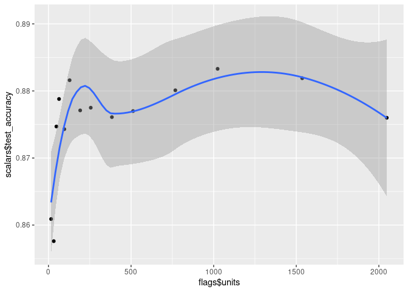

guildai
guildai provides a suite of tools for tracking, visualizing, and managing training runs and experiments. The {guildai} R package is a successor to the {tfruns} package.
Track the hyperparameters, metrics, output, and source code of every training run.
Compare hyperparmaeters and metrics across runs to find the best performing model.
Automatically generate reports to visualize individual training runs or comparisons between runs.
No changes to source code required.
Installation
The R package provides an interface to Guild AI Core. The R package will automatically download and install Guild AI Core on first use, or you can call install_guild() directly to customize the installation. You can install the guildai package as follows:
# install.packages("guildai")
remotes::install_github("t-kalinowski/guildai-r")
guildai::install_guild()Guild AI can be used with any machine learning framework, or even no framework at all. For this introductory example, we’ll start with a Keras model applied to the fashion mnist dataset.
If you’ve not used Keras from R before and you want to follow along on your machine, you can install it like this:
install.packages("keras")
keras::install_keras()Hello World
Launch a run
To start, we’ll use an example training script, “train.R”. Here is what it looks like:
library(keras)
# Prepare data ----
fashion_mnist <- dataset_fashion_mnist()
c(train_images, train_labels) %<-% fashion_mnist$train
c(test_images, test_labels) %<-% fashion_mnist$test
train_images <- train_images / 255
test_images <- test_images / 255
# Define model ----
units <- 64
model <- keras_model_sequential(input_shape = c(28, 28)) %>%
layer_flatten() %>%
layer_dense(units = units, activation = 'relu') %>%
layer_dense(units = 10, activation = 'softmax')
learning_rate <- 0.001
model %>% compile(
optimizer = optimizer_adam(learning_rate),
loss = 'sparse_categorical_crossentropy',
metrics = c('accuracy')
)
model
# Fit model ----
batch_size <- 32
epochs <- 10
history <- model %>%
fit(train_images, train_labels,
validation_split = 0.2,
batch_size = batch_size,
epochs = epochs,
verbose = 2)
plot(history)
# Evaluate model ----
score <- model %>%
evaluate(test_images, test_labels,
verbose = 0) %>%
as.list()
cat('test_loss:', score$loss, "\n")
cat('test_accuracy:', score$accuracy, "\n")
# save_model_tf(model, "model.keras")
# saveRDS(history, "history.rds")To train a model with guildai, use the guild_run() function in place of the source() function to execute your R script. For example:
guild_run("train.R")
## > library(keras)
## > # Prepare data ----
## >
## > fashion_mnist <- dataset_fashion_mnist()
## > c(train_images, train_labels) %<-% fashion_mnist$train
## > c(test_images, test_labels) %<-% fashion_mnist$test
## > train_images <- train_images / 255
## > test_images <- test_images / 255
## > # Define model ----
## >
## > units <- 64
## > model <- keras_model_sequential(input_shape = c(28, 28)) %>%
## + layer_flatten() %>%
## + layer_dense(units = units, activation = 'relu') %>%
## + layer_dense(units = 10, activation = 'softmax')
## > learning_rate <- 0.001
## > model %>% compile(
## + optimizer = optimizer_adam(learning_rate),
## + loss = 'sparse_categorical_crossentropy',
## + metrics = c('accuracy')
## + )
## > model
## Model: "sequential"
## ________________________________________________________________________________
## Layer (type) Output Shape Param #
## ================================================================================
## flatten (Flatten) (None, 784) 0
## dense_1 (Dense) (None, 64) 50240
## dense (Dense) (None, 10) 650
## ================================================================================
## Total params: 50,890
## Trainable params: 50,890
## Non-trainable params: 0
## ________________________________________________________________________________
## > # Fit model ----
## >
## > batch_size <- 32
## > epochs <- 10
## > history <- model %>%
## + fit(train_images, train_labels,
## + validation_split = 0.2,
## + batch_size = batch_size,
## + epochs = epochs,
## + verbose = 2)
## Epoch 1/10
## 1500/1500 - 4s - loss: 0.5404 - accuracy: 0.8120 - val_loss: 0.4449 - val_accuracy: 0.8452 - 4s/epoch - 2ms/step
## Epoch 2/10
## 1500/1500 - 2s - loss: 0.4068 - accuracy: 0.8569 - val_loss: 0.3798 - val_accuracy: 0.8657 - 2s/epoch - 2ms/step
## Epoch 3/10
## 1500/1500 - 3s - loss: 0.3704 - accuracy: 0.8674 - val_loss: 0.4004 - val_accuracy: 0.8585 - 3s/epoch - 2ms/step
## Epoch 4/10
## 1500/1500 - 2s - loss: 0.3423 - accuracy: 0.8768 - val_loss: 0.3512 - val_accuracy: 0.8774 - 2s/epoch - 2ms/step
## Epoch 5/10
## 1500/1500 - 2s - loss: 0.3212 - accuracy: 0.8840 - val_loss: 0.3708 - val_accuracy: 0.8694 - 2s/epoch - 1ms/step
## Epoch 6/10
## 1500/1500 - 2s - loss: 0.3055 - accuracy: 0.8886 - val_loss: 0.3538 - val_accuracy: 0.8725 - 2s/epoch - 1ms/step
## Epoch 7/10
## 1500/1500 - 2s - loss: 0.2944 - accuracy: 0.8920 - val_loss: 0.3490 - val_accuracy: 0.8759 - 2s/epoch - 2ms/step
## Epoch 8/10
## 1500/1500 - 2s - loss: 0.2819 - accuracy: 0.8964 - val_loss: 0.3354 - val_accuracy: 0.8788 - 2s/epoch - 1ms/step
## Epoch 9/10
## 1500/1500 - 2s - loss: 0.2725 - accuracy: 0.8997 - val_loss: 0.3381 - val_accuracy: 0.8789 - 2s/epoch - 1ms/step
## Epoch 10/10
## 1500/1500 - 2s - loss: 0.2642 - accuracy: 0.9016 - val_loss: 0.3301 - val_accuracy: 0.8841 - 2s/epoch - 1ms/step
## > plot(history)
## > # Evaluate model ----
## >
## > score <- model %>%
## + evaluate(test_images, test_labels,
## + verbose = 0) %>%
## + as.list()
## > cat('test_loss:', score$loss, "\n")
## test_loss: 0.35901263356208801
## > cat('test_accuracy:', score$accuracy, "\n")
## test_accuracy: 0.87629997730255127
## > # save_model_tf(model, "model.keras")
## > # saveRDS(history, "history.rds")
## >
## >This will launch a new R process in an isolated run directory using the provided script. By default, the output stream from the run will be shown at the R console (the same output stream you would see with source("train.R", echo = TRUE) or R --file=train.R).
View Runs
Call guild_view() to launch the Guild View application, which you can use to visualize and manage your runs. You can use it to search, filter, visualize, compare, view diffs of run source code and output, and more! It also bundles TensorBoard as an additional visualization tool for viewing runs.
TODO: SCREENSHOTS
Retrieve a data frame with run information in R using runs_info():
run <- runs_info()
tibble::glimpse(run)
## Rows: 1
## Columns: 15
## $ label <chr> "batch_size=32.0 epochs=10.0 learning_rate=0.001 units=64.…
## $ tags <list> <>
## $ marked <lgl> FALSE
## $ flags <tibble[,4]> <tbl_df[1 x 4]>
## $ scalars <tibble[,2]> <tbl_df[1 x 2]>
## $ operation <chr> "train.R"
## $ started <dttm> 2022-11-15 10:32:45
## $ stopped <dttm> 2022-11-15 10:33:17
## $ comments <list> [<tbl_df[0 x 4]>]
## $ status <chr> "completed"
## $ exit_status <int> 0
## $ deps <list> []
## $ project_dir <chr> "/home/tomasz/guild/guildai-r"
## $ dir <chr> "/home/tomasz/guild/guildai-r/.guild/runs/d38c0b8580a2420…
## $ id <chr> "d38c0b8580a24205b109292b4b9255f6"runs_info() returns a data frame with information about runs. In this introduction so far, we’ve only launched 1 run, so so runs_info() returns a 1-row data frame.
Run Directories
guild_view() and runs_info() provide two convenient ways to gather and present the information from runs. Importantly however, the run directory is easily accessible. There you’ll find any files, plots, logs, or other output generated by a run. The run directory also contains additional metadata about the runs that guild recorded, like the starting random seed, environment variables, information about the package versions, and other metadata frequently useful for reproducability.
fs::dir_tree(run$dir[1], all = TRUE)
## /home/tomasz/guild/guildai-r/.guild/runs/d38c0b8580a24205b109292b4b9255f6
## ├── .guild
## │ ├── attrs
## │ │ ├── cmd
## │ │ ├── deps
## │ │ ├── env
## │ │ ├── exit_status
## │ │ ├── flags
## │ │ ├── host
## │ │ ├── id
## │ │ ├── initialized
## │ │ ├── label
## │ │ ├── op
## │ │ ├── platform
## │ │ ├── plugins
## │ │ ├── r-random-seed
## │ │ ├── run_params
## │ │ ├── sourcecode_digest
## │ │ ├── started
## │ │ ├── stopped
## │ │ ├── user
## │ │ ├── user_flags
## │ │ └── vcs_commit
## │ ├── events.out.tfevents.1668526396.horse.120400.0
## │ ├── manifest
## │ ├── opref
## │ ├── output
## │ ├── output.index
## │ └── sourcecode
## │ └── train.R
## └── plots
## └── Rplot001.pngComparing Runs
Let’s make a couple of changes to our training script to see if we can improve model performance. We’ll change the number of units in our first dense layer to 128, change the learning_rate from 0.001 to 0.003 and run 20 rather than 10 epochs. After making these changes to the source code we re-run the script using guild_run() as before:
guild_run("train.R")The individual metrics test_loss and test_accuracy are visible in the comparison table in the Guild View application.
Flags
Flags are a form of run inputs, or paramaterization. The action we just described, of modifying learning_rate, epochs and units values in the script before launching the second run, can be performed by guild_run() using the flags interface.
By default, guild identifies all top-level assignments of scalar literals in an R script as run flags that can be modified per-run. Flags can be numeric (double, integer), string, boolean, or complex.
In other words, expressions like this in the R script are identified as flags:
units <- 64
learning_rate <- 0.001
batch_size <- 32
epochs <- 10See what flags are available in an R script by calling guild_run() with "--help-op" (more on this syntax later).
guild_run("train.R", "--help-op")
## Usage: guild run [OPTIONS] train.R [FLAG]...
##
## Use 'guild run --help' for a list of options.
##
## Flags:
## batch_size (default is 32.0)
## epochs (default is 10.0)
## learning_rate (default is 0.001)
## units (default is 64.0)You can launch a run with different flag values like this:
Now, when we inspect the run sources with view_runs_diff(), we see that the source file from the last run has updated flag values, as if we had modified them manually.
The flags interface is useful for hyperparamater optimization. At it’s simplest, you can iterate over the set of flag values you want and pass them to separate calls of guild_run():
You can also pass multiple values for each flag, and guild will automatically expand the combinations to a grid search. For example, this will launch 4 training runs, each run with a unique pairing of flag values:
Another way to launch a batch of runs is to pass a data frame of flags values, with each row corresponding to a run.
flags_df <- expand.grid(learning_rate = c(0.001, 0.003),
units = c(128, 256))
flags_df
## learning_rate units
## 1 0.001 128
## 2 0.003 128
## 3 0.001 256
## 4 0.003 256
guild_run("train.R", flags = flags_df)Flag annotations
You can optionally supply additional metadata about individual flags by placing hashpipe yaml annotations above the flag expression. For example, we can update our “train.R” script with the following lines:
#| description: size of first layer.
#| min: 16
#| max: 256
units <- 32
#| description: Activation function to use.
#| choices: [relu, sigmoid, tanh]
activation <- "relu"Now, the flag descriptions and constraints will appear in --help-op and related locations.
Flag destinations
As a project grows, it can be helpful to be able to move flag definitions out of the main R script. To do so, you can include a flags-dest in the frontmatter of the R script, specifying the file where guild should read and update the flag values. Then you can read in the flag values in the main R script using source() or similar.
#| flags-dest: ./flags.R
FLAGS <- envir::include("flags.R", new.env())YAML files are also supported as a flags destination:
#| flags-dest: ./flags.yml
FLAGS <- yaml::read_yaml("flags.yml")Retreiving Run Flags
The flags and flag values associated with each runs are returned by runs_info() as a packed dataframe under the flags name.
runs <- runs_info()
runs %>%
select(id, flags)
## # A tibble: 2 × 2
## id flags$batch_size $epochs $learning_r…¹ $units
## <chr> <dbl> <dbl> <dbl> <dbl>
## 1 ed45a09d083b4fd0a61c9fb2b4556226 32 20 0.003 128
## 2 d38c0b8580a24205b109292b4b9255f6 32 10 0.001 64
## # … with abbreviated variable name ¹$learning_rateScalars
The counterpart to run flags are run scalars. Whereas flags are a a special type of run input that guild can help manage, scalars are special type of run output that guild can help manage.
runs %>%
select(id, scalars)
## # A tibble: 2 × 2
## id scalars$test_accuracy $test_loss
## <chr> <dbl> <dbl>
## 1 ed45a09d083b4fd0a61c9fb2b4556226 0.873 0.443
## 2 d38c0b8580a24205b109292b4b9255f6 0.876 0.359
glimpse(runs$scalars[[1]])
## num [1:2] 0.873 0.876Here we see that guild has automatically identified test_accuracy and test_loss as run scalar outputs. By default, any lines printed to standard output during the run with the pattern "key: <numeric-value>" are recorded by guild as scalars. If you are printing values for the same scalar key multiple times during a run (e.g, loss during a training loop), then be sure to also print a step scalar in between, to enable guild to track history (and enable visualization of the run metrics with Guild View and TensorBoard).
If the run process produces tfevent records (e.g., keras::callback_tensorboard()), those are also automatically identified by guild as run scalars, and included in runs_info() (and guild_view(), and TensorBoard and other run views).
runs_info() returns the last observed value for each run scalar key, but the full history of scalars observed in runs can also be accessed from R directly:
runs_scalars()
## # A tibble: 4 × 5
## run path tag value step
## <chr> <chr> <chr> <dbl> <dbl>
## 1 ed45a09d083b4fd0a61c9fb2b4556226 <NA> test_loss 0.443 0
## 2 ed45a09d083b4fd0a61c9fb2b4556226 <NA> test_accuracy 0.873 0
## 3 d38c0b8580a24205b109292b4b9255f6 <NA> test_loss 0.359 0
## 4 d38c0b8580a24205b109292b4b9255f6 <NA> test_accuracy 0.876 0Managing runs
Guild comes with a family of functions for managing runs.
- Annotate runs:
runs_comment(),runs_mark()andruns_tag(). - Move, archive, or copy runs:
runs_export()andruns_import(). - Delete runs:
runs_delete()runs_purge()runs_restore().
The runs_* family of functions all take runs as a first argument, and can be composed with %>% and runs_info() or runs_scalars(). For example:
library(dplyr)
best <- runs_scalars() %>%
filter(tag == "test_accuracy") %>%
slice_max(value)
best
## # A tibble: 1 × 5
## run path tag value step
## <chr> <chr> <chr> <dbl> <dbl>
## 1 d38c0b8580a24205b109292b4b9255f6 <NA> test_accuracy 0.876 0
best %>%
runs_tag("best") %>%
runs_export("./best-runs")The runs arguments can be supplied as data frame, as returned by runs_info() or runs_scalars(), like in the example above. runs can also be a character vector, with a flexible syntax supported for specifying runs selections: For example, runs can be an id, an integer (the n-th last run), or any combination of filter specifications like --running and --started 'last hour'. See resolve_run_ids("--help") for details.
Supplying guild options
https://my.guild.ai/t/user-config-reference/173
Guild options can be supplied as hashpipe yaml in the frontmatter of the script. For example, we can inform guild that the script operation should not store csv files from the project as part of the run directory by modifying the front of the script like this:
#| flags-dest: ./flags.R
#| sourcecode:
#| - exclude: '*.csv'A comprehensive listing of all the options that can be supplied to guild via script frontmatter can be found here.
Using guild from the terminal
guild can also be used directly from the terminal. Call the R function export_guild_cli() to place the guild executable installed by guildai::install_guild() on your PATH:
export_guild_cli(dest = "~/bin")Then you can launch runs and perform other guild operations from the terminal:
guild run train.R
guild run train.R batch_size='[32,64]'As you move between the terminal and the R console, almost all of the same syntax supported from the terminal can be used from R by passing strings to the respective R functions.
By default, R character vectors supplied to ... throughout most R functions are quoted for the system shell and passed through to guild. This enables usage like:
guild_run("train.R", "batch_size=[32,64]")There are some additional conveniences provided for passing through command line options from R.
- Use
I()to avoid quoting a string for the shell, allowing you to pass through multiple arguments in a single string. - For arguments that take values, you can pass them from R as named arguments or named objects.
- Named arguments are automatically translated from R conventions to shell conventions:
-
_in a argument name is converted to-, and a--prefix is automatically added, sobatch_comment = "foo"becomes--batch_comment 'foo'. - boolean values are understood to be switches, so
keep_run = TRUEis translated to--keep-run. - names vectors are automatically recycled for the shell, so
tag = c("a", "b" "c")becomes--tag a --tag b --tag c.
-
Here are a few different R expressions that invoke guild with identical system calls.
runs_info(marked = TRUE, started = 'last hour')
runs_info("--marked", "--started" = "last hour")
runs_info("--marked", c("--started", "last hour"))
runs_info("--marked", c("--started" = "last hour"))
runs_info(c("--marked", "--started", "last hour"))
runs_info(I("--marked --started 'last hour'"))
runs_info(I("-Fm -Fs 'last hour'"))
runs_info("-Fm", "-Fs" = "last hour")End to End Example
To tie things together, we’ll use guild to explore what impact units has on test_accuracy in our training script.
units <- (2 ^ (4:11)) %>% c(diff(., 2)) %>% sort()
units
## [1] 16 32 48 64 96 128 192 256 384 512 768 1024 1536 2048We can see compare run flags and run scalars from R:
runs <- runs_info(seq_along(units))
df <- runs %>%
select(flags, scalars)
df
## # A tibble: 14 × 2
## flags$batch_size $epochs $learning_rate $units scalars$test_accuracy $test_…¹
## <dbl> <dbl> <dbl> <dbl> <dbl> <dbl>
## 1 32 10 0.001 2048 0.876 0.370
## 2 32 10 0.001 1536 0.882 0.343
## 3 32 10 0.001 1024 0.883 0.340
## 4 32 10 0.001 768 0.880 0.367
## 5 32 10 0.001 512 0.877 0.377
## 6 32 10 0.001 384 0.876 0.364
## 7 32 10 0.001 256 0.877 0.356
## 8 32 10 0.001 192 0.877 0.348
## 9 32 10 0.001 128 0.882 0.346
## 10 32 10 0.001 96 0.874 0.356
## 11 32 10 0.001 64 0.879 0.345
## 12 32 10 0.001 48 0.875 0.363
## 13 32 10 0.001 32 0.858 0.398
## 14 32 10 0.001 16 0.861 0.399
## # … with abbreviated variable name ¹$test_loss
library(ggplot2)
ggplot(df, aes(x = flags$units, y = scalars$test_accuracy)) +
geom_point() + geom_smooth()
Addin
The guildai package installs an RStudio IDE addin which provides quick access to frequently used functions from the Addins menu:
Note that you can use Tools -> Modify Keyboard Shortcuts within RStudio to assign a keyboard shortcut to one or more of the addin commands.
Background Training
Since training runs can become quite lengthy, it’s often useful to run them in the background in order to keep the R console free for other work. You can launch a guild run without blocking the R console by specifying guild_run(background = TRUE) in the call. You can then view real-time outputs from your run(s) using guild_view().
Alternatively, you can launch training runs in the terminal pane:
Rscript -e 'guildai::guild_run("train.R")'If you are not running within RStudio then you can of course use a system terminal window for background training.